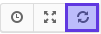
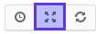

Userviews¶
Concept¶
In Canopsis’ frontend, almost everything element an user can see is wrapped in a container called view.
Main view and Sattelite views¶
There is 2 main categories of views :
- The view that presents the content the user asked for. They basically represent dashboards and present informations that the user really care for. These views represent the
main view. - Views that decorates the content. They usually contains session informations, menus, buttons (log out, profile, and so on ...), or informations that are needed on each view (header, footer). These are the
sattelite views.
To sum up, main view will change between pages, and sattelite views tends not to vary during user session.
Regular views disposition¶
By default, views are arranged as listed below:
- Sattelite view:
view.app_header - Main view (depending on the current page)
- Sattelite view:
view.app_footer
Main view features¶
On the top right of the main view are located some view actions :
refresh |
 | Manually refreshes the view |
Toggle flullscreen |
 | Hide menus, tabs, header and footer, and displays only the main view (or go back to the normal display if already in fullscreen mode) |
Manage views¶
A special view, called userviews, is included in Canopsis UI. It’s in fact a view manager/browser. You can access it with a menu like on screenshot :

As a result, you’ll get :

For each view, some actions are available :
View |
Go to the pointed View in read mode | |
Rights |
Edit actual view’s rights | |
Duplicate |
Allow you to duplicate the view | |
Remove |
Remove the View | |
Edit |
Edit the record name |